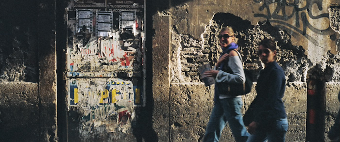
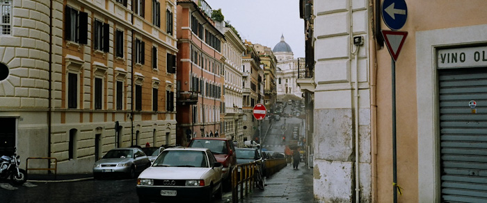
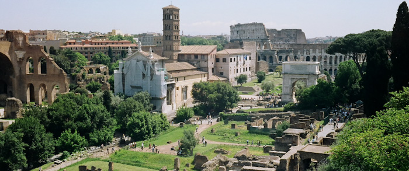
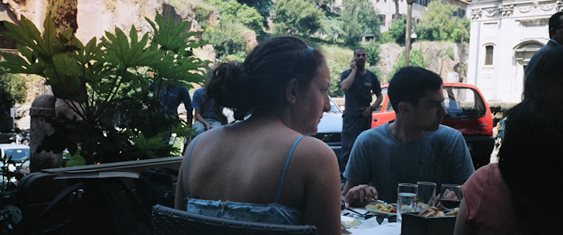
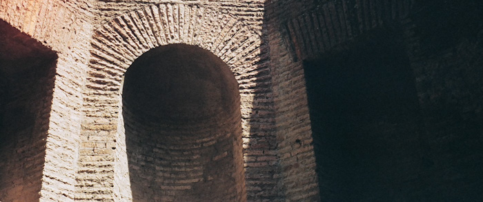
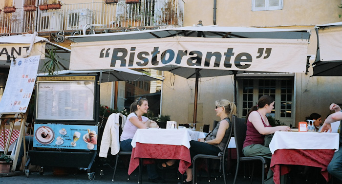
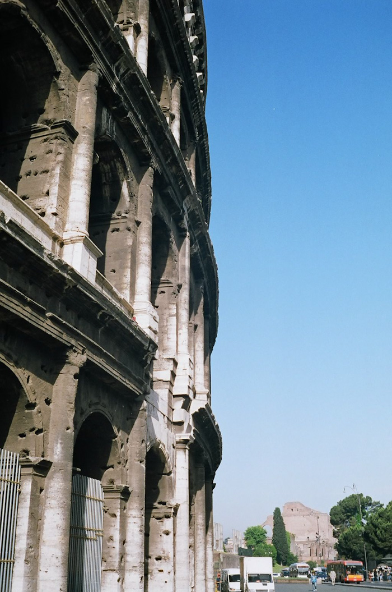
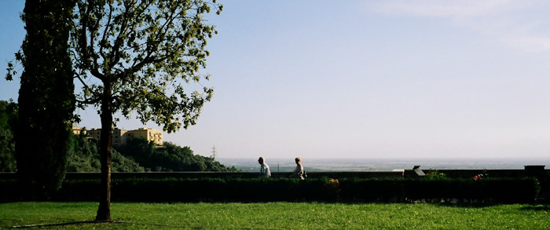

Passionate Italy #1

2007년 5월 7일, Piazza Spagna in Roma
필름 카메라를 찾기 위해 첫날임에도 시내관광도 안하고 Metro A 를 타고 종점 Anagnina 가서 버스로 갈아타고 한참을 갔다. 목적지는 IKEA, 까르푸와 Media world. 버스기사에게 아무것도 모르니까 그냥 "까르푸 까르푸~" 만 외쳐댔다. 기사가 고개를 끄덕거리면서 맞다는 표시를 하더라. 결국 기사 옆에서 봉을 부여잡고 가만히 서있었다. 언제 어디서 까르푸가 눈앞을 스쳐지나갈 지 몰랐기에 기사의 눈짓 손짓만 유심히 쳐다보고 있었다. 하지만 이 첫 여정은 허사였다. Media World에 EOS3000 + 28~80mm 번들 렌즈가 있었지만 가격이 터무니 없이 비쌌다. 200유로, 우리 나라 돈으로 24만원이다. 그냥 카메라 없이 여행해야겠다.

사람들 사진을 못 찍는게 아쉽다. 하지만 방법이 없으니 눈으로 기억으로 찍을 수 밖에 없다. 기억은 휘발성이라서 쉽게 사라지지만 또 쉽게 사라지지 않는다. 기억으로 남기기위해선 유심히 모든것을 천천히 느긋하게 보는 수 밖에 없다. 도시를 옮길때 마다 카메라를 알아보면서 느긋하게 구해야겠다.
동일, 민박 in Roma
일반 필름 현상하는 가게에 1~2개씩 있는 중고 카메라들은 모두 비쌌다. 미놀타 X-300s가 150유로나 한다. 펜탁스 ME-super는 250유로다. 이걸 산다면 여행자금에 아주 지대한 영향을 미칠 것 같다. 그냥 지금 작동 잘 안되는 내 7sII 로 F8~16, 1/60 ~ 1/500에서 조절해 가며 써야겠다.

이곳 로마에 와보니 이제서야 알겠다. 내가 영어로 말 했을 때 상대방이 알아듣지 못하는 경우에 그것이 내 영어실력의 문제인지 상대방 영어실력의 문제인지 알 것같다. 상대방 영어실력의 문제일 경우 상대방은 대부분 딴 소리를 한다. 되묻지 않는다. 캐나다와 미국에서는 이러진 않았는데 여기 와서는 오늘 카메라 찾아다니면서 내가 천천히, 바디랭귀지까지 써가며 이야기해야 겨우 이야기가 된다. 어떤 가게는 자기는 아예 영어를 못하니 그냥 나가라고까지 말한다. 덕분에 이리저리 진땀을 잔뜩 흘렸다.
Trevi 분수에서 한국인 부부가 똑딱이 필카로 사진을 찍는 것을 보았다. 그것을 보고있으니 문득 이런 생각이 들었다. '내 고장난 카메라는 조리개도 8~16까지 조절되고 셔터 스피드도 1/60에서 1/500까지 조절이 된다. 저 똑딱이도 사진을 찍어대는데 난 왜 안되겠는가!'. 사진기를 꺼내들고 1/60에 조리개 8에놓고 사진 몇장을 찍으니 비가 내리더라. 팡테온을 가려다가 포기하고 비를 맞으며 민박집까지 걸어왔다. 알고보니 팡테온은 비가올 때 가야한다더라. 물론 지붕에있는 9미터짜리 구멍으로 비가 안내릴거라는 기대를 했다가는 빗물에 온 몸을 적시게 될 터이지만.
비록 결과를 장담할 수는 없지만 사진을 찍으니 여행이 즐거워진다.
2007년 5월 8일, Piazza Navona in Roma

Colosseo Palatino, Foro Romano, Bocca Della Verita(진실의 입), Campidoglio, Pantheon, Piazza Navona, Fontana di Trevi, Piazza di Spagna, Piazza del Popolo...
이 모든 장소가 걸어서 다닐 수 있는 거리에 다 있다. 아침부터 지금(18:20)까지 걸어다녔다. 사람들로 가득 찬 곳도 있었고 조금은 한산한 곳도 있었다. 가장 최고의 장소를 꼽으라면 나는 Palatino 언덕을 꼽겠다. 폐허가 되어버린 유적지 이지만 로마가 잘 보이는 곳, 그리고 로마를 느낄 수 있는 곳이었다.

점심으로 먹은 스파게티는 이제까지 먹어본 스파게티중 으뜸이라고 할 만 했다. 그냥 길을 걷다가 아무 가게나 들어갔는데도 이렇게 맛있는데 제대로 알려진 곳을 가면 얼마나 맛있을지 상상할 수 없을 것 같다.
많이 걸었고, 많이 보았고, 맛있게 먹었다. 그리고 많이 느꼈다. 그것으로 충분하지 아니한가! 여행은 사람과의 만남이다. 유물, 유적, 명화의 감상은 디저트일 뿐이다. 그것을 잊지말자. 바티칸의 천지창조, 최후의 심판을 보지 못해도 사람을 만나면 그걸로 된 것이다.
2007년 5월 9일, Colosseo in Roma
어제 샀던 팔라티노 티켓이 오늘 콜로세움도 들어갈 수 있다고 들었는데 그것이 1:30 이후에 사야지 가능한 것이었다. 그래서 표 검사하는 직원이 막았는데 우겨서 겨우 들어왔다.
이젠 다 허물어져가는 Colosseo, 바닥조차 남아있지 않지만 한때는 이곳에서 수많은 군중이 모여서 사자들이 인간을 사냥하는 것을 보고 즐겼겠지. 살인, 섹스, 퇴폐적인 문화로 가득했던 로마. 그 문화는 사라졌지만 폼페이와 로마의 유적들이 지금까지 그 때의 로마를 알려주고있다.

Pantheon도 그렇고 여기 Colosseo도 그렇지만, 건물을 쌓을 때 불과 4cm도 안될 듯한 얇고 긴 벽돌을 이용해서 쌓았다. Pantheon은 외벽조차 그 벽돌로 쌓아올렸다. 여기서 만난 형은 그 경이로움을 보고 "노예들이지 뭐. 밥안주고 때리면 다해~"라고 말한다. 맞다. 계획은 로마 황제가 했겠지만 만들어 낸 것은 수많은 전쟁을 통해 생겨난 노예들이었을 것이다.
만일 나폴레옹이 로마를 공격할 때 Foro Romano 뿐만이 아니라 이 로마 전체의 유적을 철저히 파괴했다면 지금의 이탈리아는 어땠을까? 한국이 그와같은 상황이 아닐까? 일본에 의해 수많은 유산, 유물이 파괴, 말살되었다. 결국 관광으로는 별 흥미를 끌만한 - 아기자기한 맛은 있지만 외국인들의 흥미를 끌만한 - 요소가 없는 평범한 국가가 되어버렸다. 수많은 국보급 유물은 우리나라에 있지 않고 일본과 영국에 있다.
 
